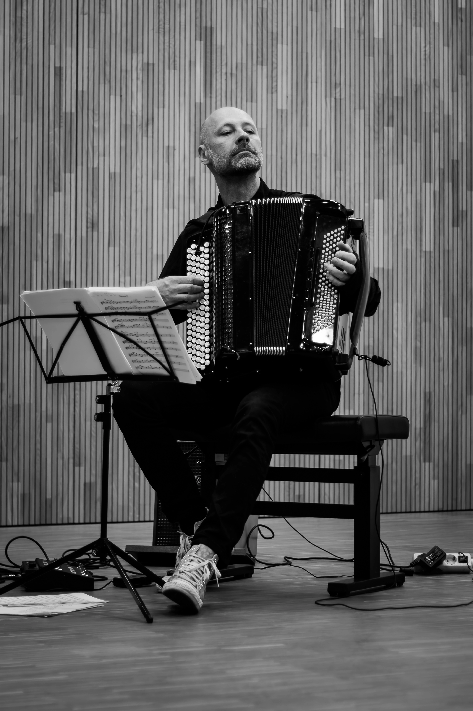

Bereits als Jugendlicher ausgebildet in Komposition, Orgel- und Klavierspiel, erhielt Harald Oeler seine entscheidenden musikalischen Impulse von Hans Bogner an der Musikschule Gaggenau. Erste Preise bei nationalen Wettbewerben und die Vorbereitung auf das bevorstehende Musikstudium, waren der Nährboden einer äußerst wertvollen Unterrichtszeit bei Hans Bogner.
Nach dem Abitur folgte ein Musikstudium im Hauptfach Akkordeon, zunächst bei Prof Hugo Noth, später bei Prof. Stefan Hussong an der Hochschule für Musik in Würzburg. Die eindrucksvollen Studienjahre formten einen Musiker, welcher heute in einem breitgefächerten musikalisch-künstlerischen Aufgabenfeld von Jazz, Transkriptionsmusik und zeitgenössischer Musik aktiv ist.
Zahlreiche nationale und internationale Wettbewerbserfolge festigten, auf dem Weg zum Meisterklassendiplom, 2008, die Bühnenreife und künstlerische Individualität Harald Oelers. Ein 3. Preis beim 3rd Internationale Accordion Competition JAA Tokio/Japan 2002, ein 2. Preis beim bedeutendsten internationalen Akkordeonwettbewerb in Arrasate 2007 und ein 1. Preis beim 45. Internationalen Akkordeonwettbewerb Klingenthal mit dem Akkordeonduo Animé 2008, belegen dies eindrucksvoll.